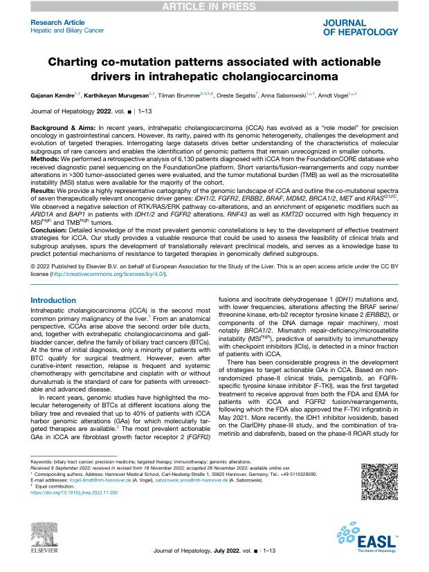
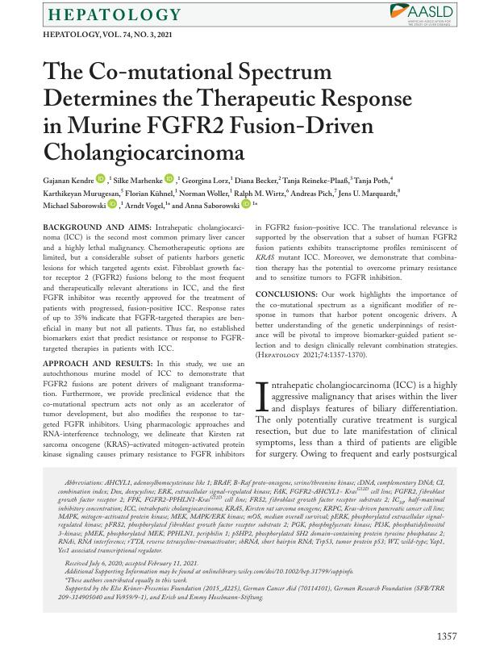
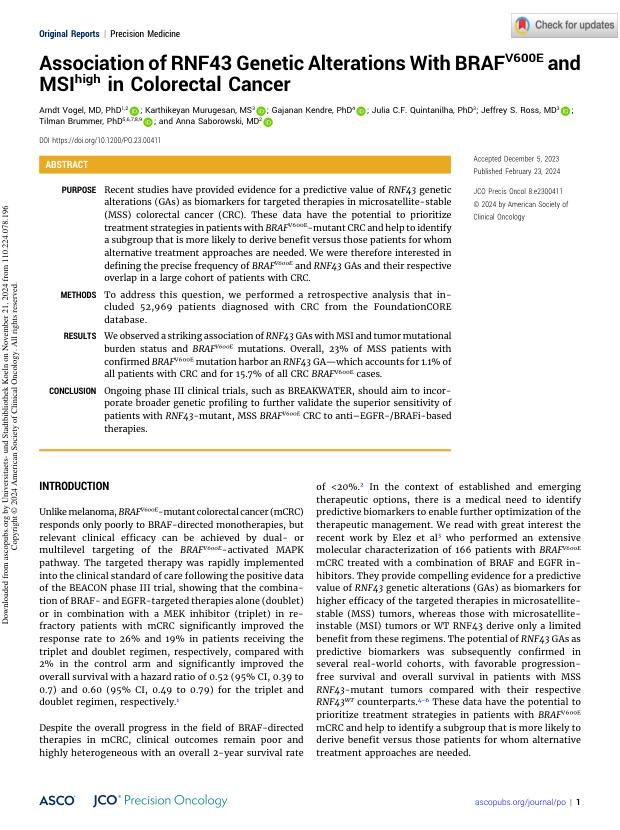

Kendre Lab
Genetic context decides — in cancer, in the injured liver, and between microbes and their host
When the right drug meets the wrong tumour
Precision oncology assumes that finding an actionable driver predicts response to a targeted drug. In the clinic it often does not. FGFR2 fusions occur in 10–20% of intrahepatic cholangiocarcinoma and approved FGFR inhibitors exist — yet only 20–35% of patients respond well.
Our work has shown that the co-mutational landscape, not the driver alone, governs that outcome. The lab's purpose is to make that context predictive, using liver cancer as a working model for a problem that runs across oncology.
Our research areas
Co-mutations, Heterogeneity and Drug Resistance
Why tumours sharing the same actionable driver respond so differently to the same drug.
Read moreHost Genetics of Liver Fibrosis
How a person's own genetic make-up shapes whether, and how fast, an injured liver scars.
Read moreHost–Microbe Communication and Synthetic Biology
Inter-kingdom signalling in the tumour microenvironment, and genetic circuits built to probe it.
Read moreFeatured Publications
Explore some of the lab's featured publications below. For the complete list, use the “View All Publications” button.

Journal of Hepatology · 2023 Charting co-mutation patterns associated with actionable drivers in intrahepatic cholangiocarcinoma Read the paper
Hepatology · 2021 The co-mutational spectrum determines the therapeutic response in murine FGFR2 fusion-driven cholangiocarcinoma Read the paper
JCO Precision Oncology · 2024 Association of RNF43 genetic alterations with BRAF V600E and MSI-high in colorectal cancer Read the paperRoom to think
Good science comes from people who are given space to work things out. The aim here is to train students who can still reason when the protocol stops working — who understand the experimental logic behind a result, not only the technique that produced it.
Students at every stage are mentored properly and take genuine ownership of their projects. Prospective PhD students apply through the NIT Rourkela admissions process; postdoctoral applicants, project students and interested M.Sc. students are welcome to write directly.